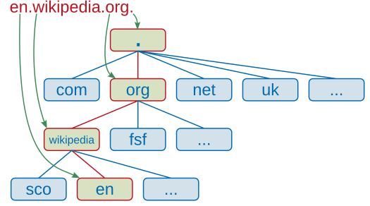

www, webhosting, domény, server
www - World Wide Web
Ak máme na mysli World Wide Web ide o projekt z 90 rokov, ktorý vznikol v CERN.
Ide o systém, ktorý pomocou internetu a HTTP a ďalších protokolov prenášať dokumenty (web).
Môžeme tým ešte aj myslieť prvý web browser a web editor.
Webhosting
Konkrétna forma použitia serverov (fyzické počítače) za účelom prevádzky webstránky.
Zvyčajne webhosting má uloženú nejakú základnú verziu web-aplikácie, ktorú si používateľ stiahne stiahneme dočasne (iba časť).
Zároveň tam väčšinou beží serverový backend a databáza.
Aktuálne Webhosting služby tvoria to, čo považujeme v dnešnej dobe za World Wide Web.
Napr. táto stránka je hostovaná na GitHub. Websupport, Wordpress, ...
Domény
Doména je súbor znakov reprezentujúce nejakú IP teda nejaký počítač alebo sieť (počítače/servre).
Verejné domény podliehajú určitím pravidlám a to hlavne štruktúre.
Tá sa skladá z levelov Top, second ...
Ak by ste chceli vedieť aktuálnu IP domény existujú na to služby alebo aj commandy napr.
who.is
nslookup.io
cmd command tracert

Server
Server nie je nič iné ako počítač, teda obsahuje rovnaké komponenty (CPU, RAM ...).
Za server považuje tie zariadenia, ktoré slúžia na spracovanie requestov použivateľa v rámci client-server architektúry.
Úloha
Máte stránky:
1. Uvedte IP adresu domény fungčnej stránky (hint: využite cmd príkaz tracert alebo nslookup)
2. Prvý čo sa prihalási a správne ukáže IP vyhral
[1] [2]
[3] [4]
[5] [6]
[7] [8]
Zdroje:
Obrazok servra
wiki server (EN)
wiki domény (EN)
wiki webhosting
wiki world wide web